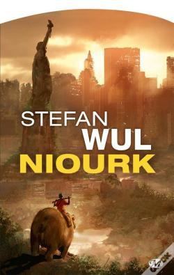

2021 Books
| Título | Autor | Ano | Lido em: | Páginas | Classificação |
|---|---|---|---|---|---|
| The Future is faster than you think | Peter H Diamandis, Steven Kotler | 2020 | January | 384 | ★★★★★ |
| Leadership is Language | L. David Marquet | 2020 | January | 352 | ★★★★★ |
| Niourk | Stefan Wul | 1957 | Fevereiro | 241 | ★★★ |
| Contas Poupança - Viva Melhor com o Mesmo Dinheiro | Pedro Anderson | 2016 | Fevereiro | 200 | ★★★★ |
| Roma - Ascensão e Queda de um Império | Simon Baker | 2009 | Março | 350 | ★★★★ |
The Future is Faster Than You Think - Peter H Diamandis, Steven Kotler (Janeiro)

Leadership is Language - David Marquet (Janeiro)

Niourk - Stefan Wul (Fevereiro)

Contas Poupança - Viva Melhor com o Mesmo Dinheiro - Pedro Anderson (Fevereiro)